전체 여행후기는 네이버 블로그에 올리고 VLOG도 있지만
대부분 음식사진이라 여기에 올리는거랑 비슷합니다 ㅋㅋㅋㅋ
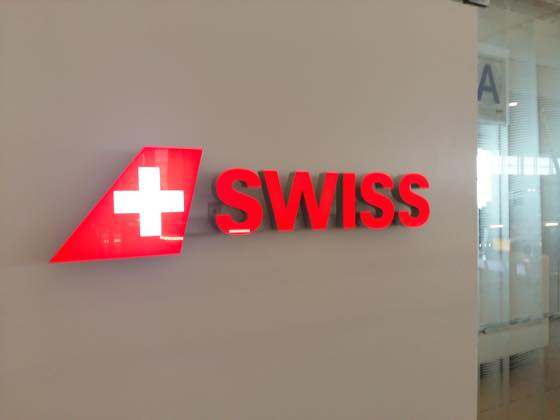
JFK 공항 터미널4 SWISS 라운지
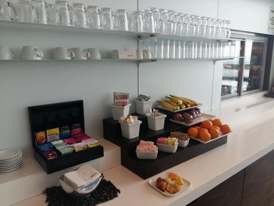
커피 / 차 / 과일 등등
반대편에는 빵이랑 요거트 치즈 등이 준비되어 있었습니다 :p
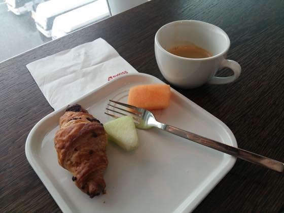
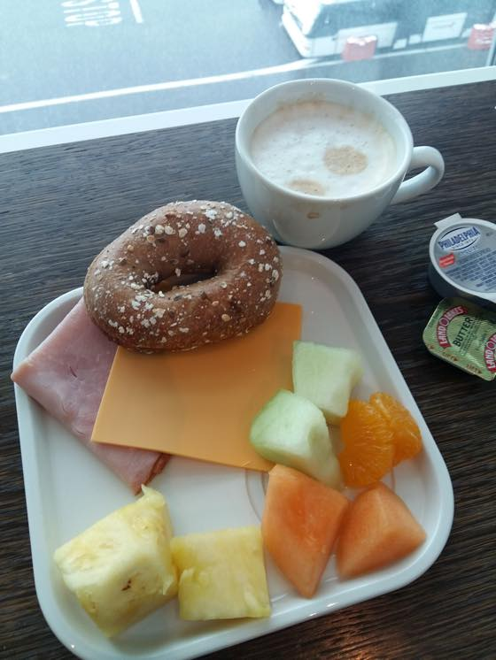
미니베이글은 정말 맛없었어요;;; 너무 딱딱함;;
------
아래부터는 비행기 탑승해서 먹은것들 :)
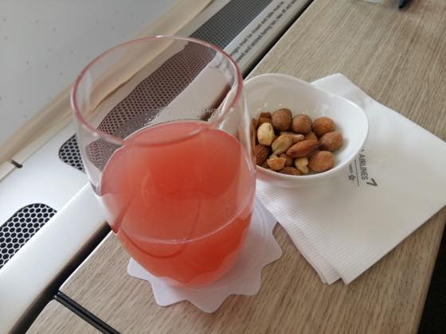
이륙전 구아바 주스 + 땅콩
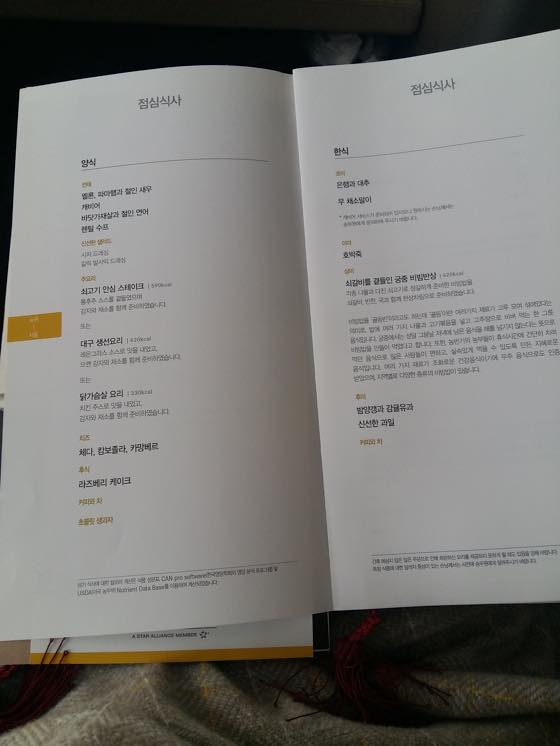
점심식사 메뉴
나능 양식 - 소고기 안심 스테이크 선택
고기!!
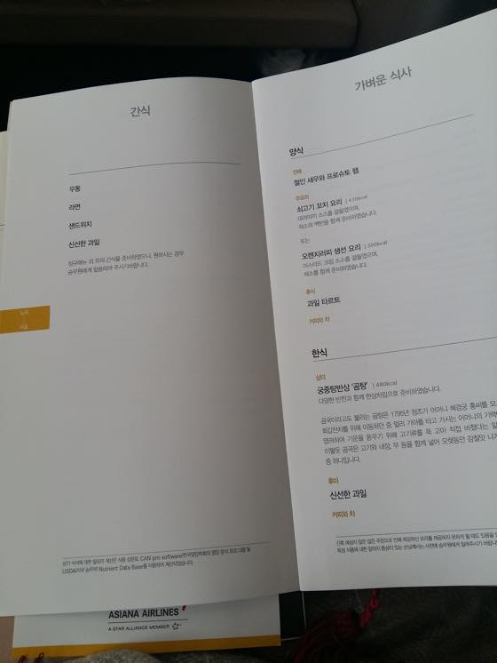
간식
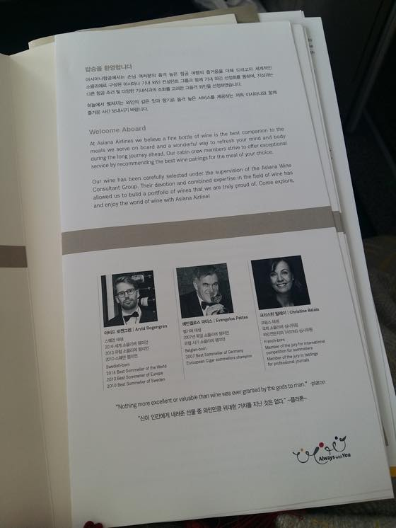
소물리에 소개
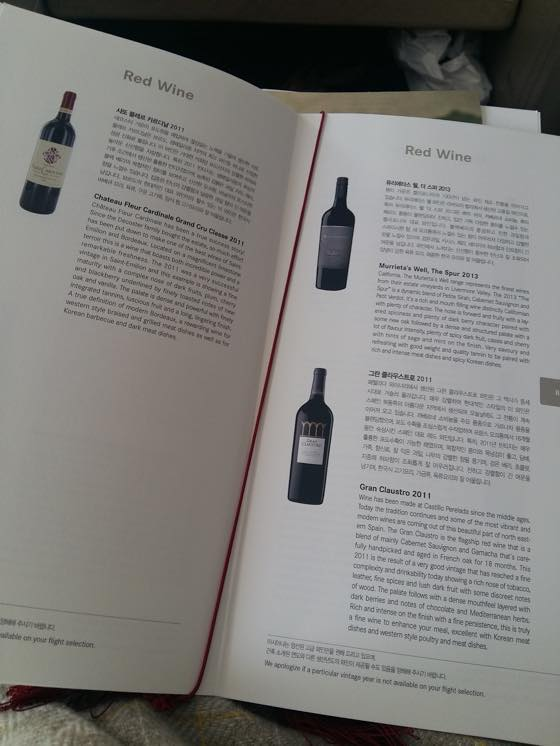
술을 전혀 못하니 이게 다 그림의 떡 ;ㅂ;
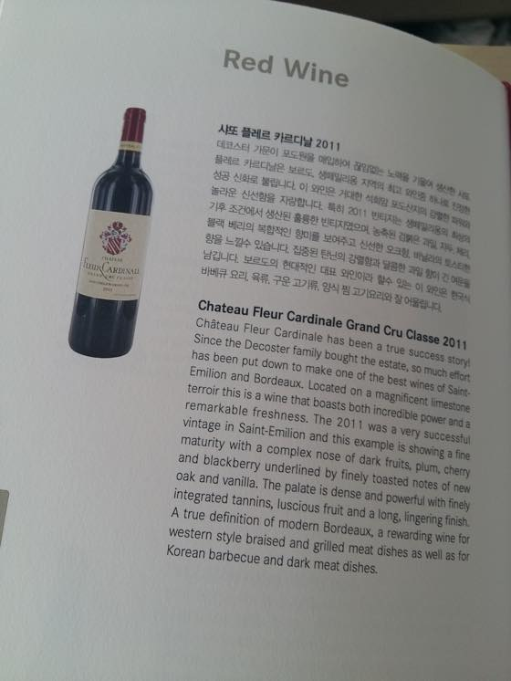
스테키 먹으니까 혹시나 해서 요걸 완전 쪼금만 달라고 부탁했는데
결국 1/5도 못 마셨습니다 ㅋㅋㅋㅋ
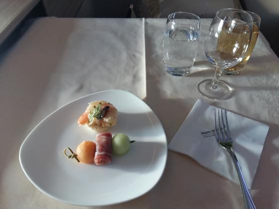
전채
멜론, 파마햄과 절인새우
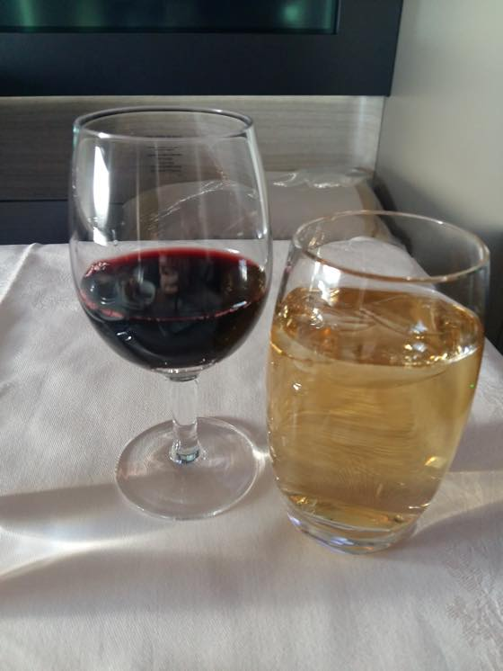
고기요리와 잘 어울린다는 설명에 시도해본 샤또 플레르 카르디날 2011, 옆에는 진저에일 ㅋㅋ
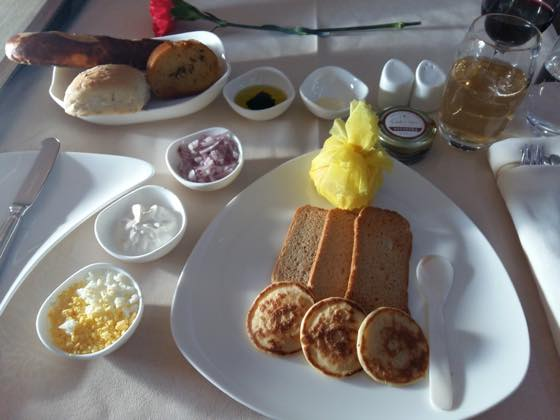
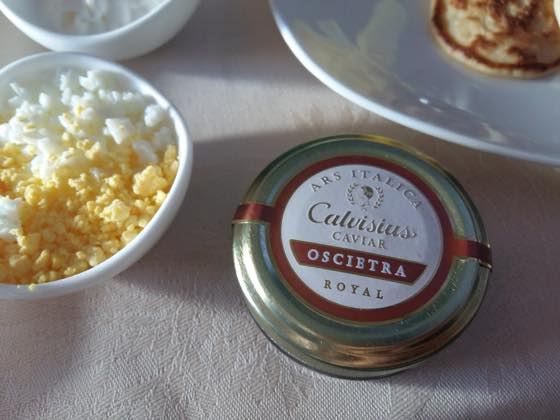
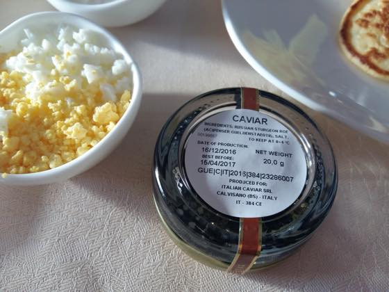
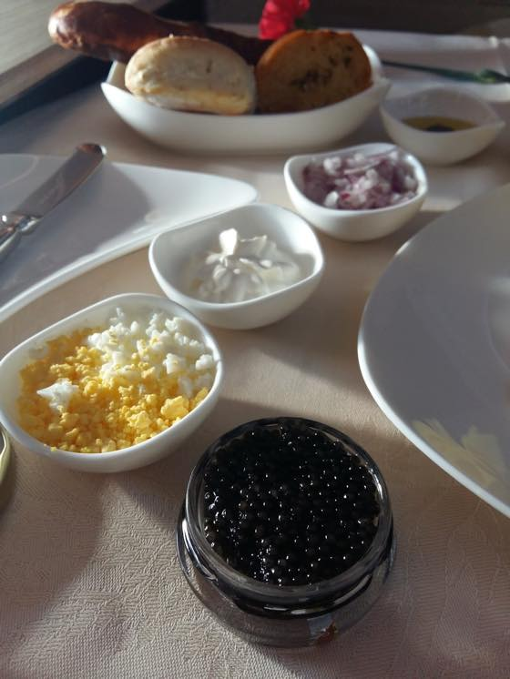
캐비어
비싼분 (....) 맛은 짭쪼롬 했습니다 ㅋㅋㅋㅋㅋㅋㅋ
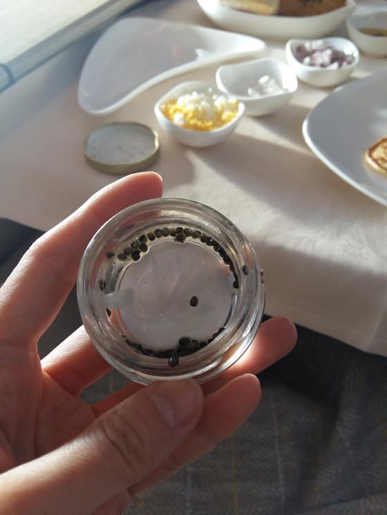
다 비웠음 ^^**
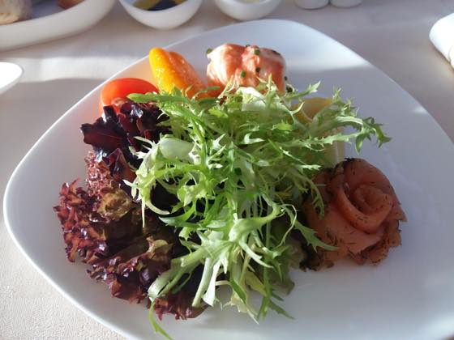
바닷가재살과 절인 연어
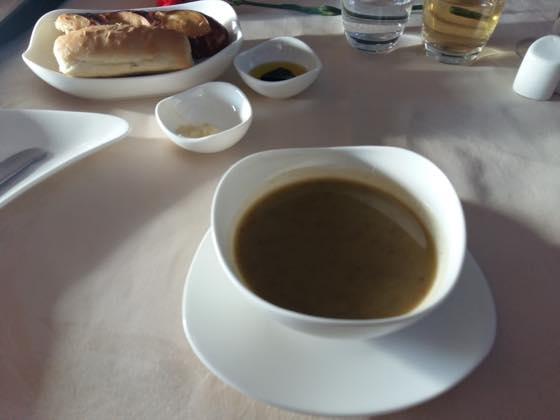
렌틸 수프
전 여기서 이미 배가 어느정도 찼습니다 -_-;;;
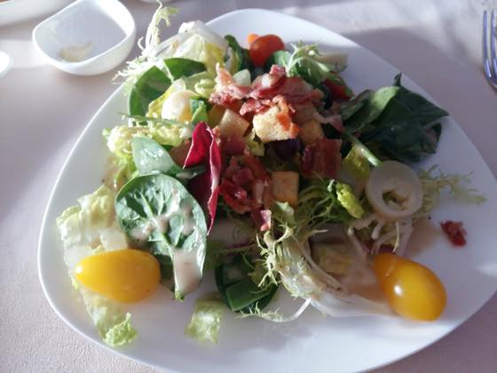
샐러드
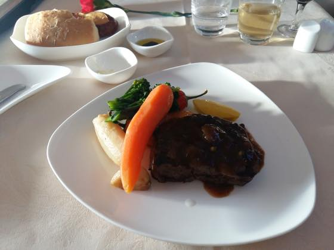
스테키!! 소고기 안심 스테이크 / 통후추 / 감자와 채소
익힌당근이 맛있더군욤 //
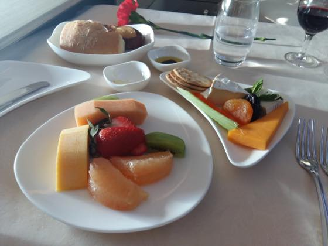
과일과 치즈
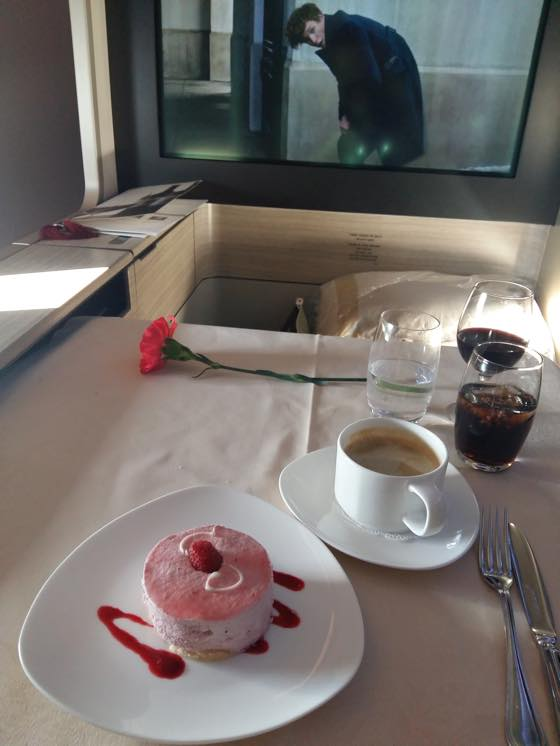
후식
라즈베리 케이크와 커피
케키 맛있어요~ :D :D
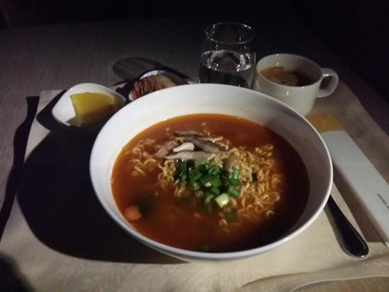
자다가 중간에 깨서 라면도 먹었습니다 ㅋㅋ
신라면 / 신라면 블랙 / 삼양라면 중 택할수 있다고 해서
삼양라면으로 ^^
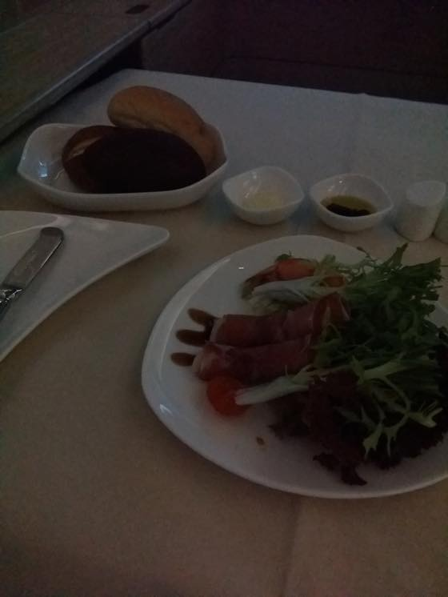
아침식사도 양식 선택
절인 새우와 프로슈토 햄
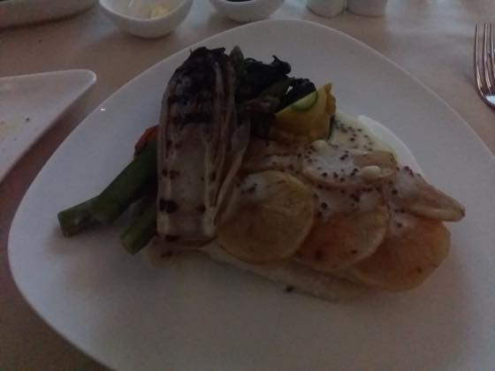
오렌지러피 생선 요리
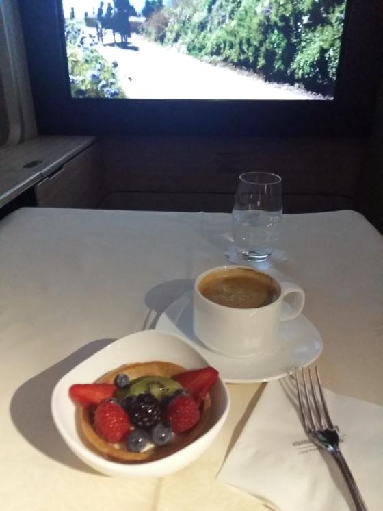
후식은 과일 타르트 + 커피
디저트가 훌륭했습니다// 이것도 마시쏘 :D :D
이것으로 뉴욕 여행기 끗입니다!!
잘놀았으니 힘내서 로동할렵니다 ^^**
좋은 일주일 이었엉 ㅋㅋㅋㅋㅋㅋ